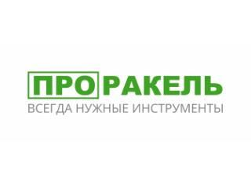

Ракели и СкребкиУсловия уточняются · Связь не уточнена
Медиа-публикация. Подробности — в оригинале.

CleanExpo Moscow 2026 · Россия · Зал №3 · Стенд A615
Павильон №1
Дата среза карточки: 16.11.2026 11:14
Посмотреть официальную схему →
ПРОРАКЕЛЬ
Регион: ПСКОВ · Адрес: Псков, Советская
Медиа-публикация. Подробности — в оригинале.
УНИВЕРСАЛЬНАЯ- новая палочка из сверхпрочного материала для чистки без царапин, приклейки пленки и вскрытия техники... + 100 применений !(артикул 21910176) Эргономичная, удобная. #производство #удобно #длямобильных
БЕЗ ЦАРАПИН 🥇 - КАК ПОЧИСТИТЬ ПОВЕРХНОСТЬ МАШИНЫ, СТОЛА, ПРЕДМЕТОВ? В нашем тестовом наборе таких инструментов более 🪒 . закажи до 10 февраля и сэкономь 50% стоимости! ⏰ Очень часто мы даже не можем догадаться как использовать тот или иной инструмент. Мы добавили в большинство…
МИНИСКРЕБОК - 3-е применение(может пришествие 😂 ). Он у нас всегда в кармане. Удобный и маленький. Сегодня, мы быстро почистили стекло. 🎅🏻 Очень удобно! 🔗 Он в меру мягкий, в меру твердый. Жесткая правда- очень удобно. Он чистит лучше чем стандартные жесткие скребки. #произведеновроссии ;…
БЕЗОПАСНЫЕ НОЖИ - мы их производим ! Радость у нас маленькая- но важная! Мы наконец-то добились, что у нашего Ножа(Просторез -4, Safety-Shoe. арт. 21910480) - НОВАЯ УДОБНОЕ КРЕПЛЕНИЕ ЛЕЗВИЯ! ВАЖНО- можно теперь не использовать ключ и быстро поменять лезвие(это экономит работу на 10 минут). Маленький…
История номер 2 про Скребарик (Минисребок ) 🛠 - чистка крана и сантехники с Минискроебком. Без царапин и чистит самые трудные места! 💦
История номер 1- про нашего СКРЕБАРИКА . Кто я?= Скребарик(маленький Минискребок) - я помогу Вам удалить Этикетку . Мне очень это нравится это делать. Когда я вижу этикетку- мне хочется ее отклеить. А вам? Купили вы кружку например, а на ней Этикетка- а я тут…
Меня зовут - СКРЕБАРИК ! 👏 наш Минискребок - ему мы посвящаем 2026 год! Маленький, уникальный - очистит грязь, этикетки, клей и не поцарапает поверхность. Он Нужен всем! Почему Скребарик ? - родился в производится в Пскове, а местных жителей называют Скобарями. Вот и будет…
Всем Хорошего, 🎅🏻 Чистого :) и Светлого , Ясного Нового Года! Спасибо всем клиентам за сотрудничество! 👏
👏 дополнение к каталогу в удобной форме!
Источники: